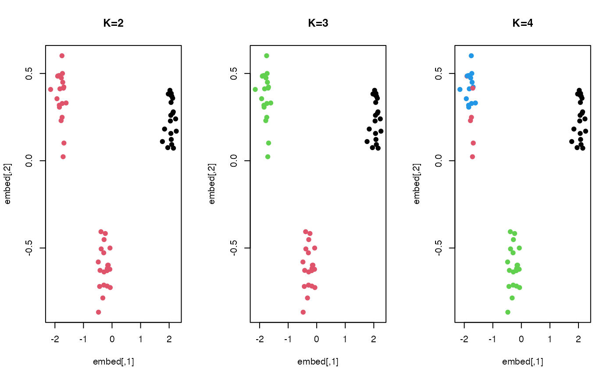

R/functional_kmeans03A.R
funkmeans03A.RdGiven \(N\) curves \(\gamma_1 (t), \gamma_2 (t), \ldots, \gamma_N (t) : I \rightarrow \mathbf{R}\), perform \(k\)-means clustering on the coefficients from the functional data expanded by B-spline basis. Note that in the original paper, authors used B-splines as the choice of basis due to nice properties. However, we allow other types of basis as well for convenience.
funkmeans03A(fdobj, k = 2, ...)a named list of S3 class T4cluster containing
a length-\(N\) vector of class labels (from \(1:k\)).
a 'fd' object of \(k\) mean curves.
name of the algorithm.
Abraham C, Cornillon PA, Matzner-Lober E, Molinari N (2003). “Unsupervised Curve Clustering Using B-Splines.” Scandinavian Journal of Statistics, 30(3), 581–595. ISSN 0303-6898, 1467-9469.
# -------------------------------------------------------------
# two types of curves
#
# type 1 : sin(x) + perturbation; 20 OF THESE ON [0, 2*PI]
# type 2 : cos(x) + perturbation; 20 OF THESE ON [0, 2*PI]
# type 3 : sin(x) + cos(0.5x) ; 20 OF THESE ON [0, 2*PI]
# -------------------------------------------------------------
## PREPARE : USE 'fda' PACKAGE
# Generate Raw Data
datx = seq(from=0, to=2*pi, length.out=100)
daty = array(0,c(100, 60))
for (i in 1:20){
daty[,i] = sin(datx) + rnorm(100, sd=0.5)
daty[,i+20] = cos(datx) + rnorm(100, sd=0.5)
daty[,i+40] = sin(datx) + cos(0.5*datx) + rnorm(100, sd=0.5)
}
# Wrap as 'fd' object
mybasis <- fda::create.bspline.basis(c(0,2*pi), nbasis=10)
myfdobj <- fda::smooth.basis(datx, daty, mybasis)$fd
## RUN THE ALGORITHM WITH K=2,3,4
fk2 = funkmeans03A(myfdobj, k=2)
fk3 = funkmeans03A(myfdobj, k=3)
fk4 = funkmeans03A(myfdobj, k=4)
## FUNCTIONAL PCA FOR VISUALIZATION
embed = fda::pca.fd(myfdobj, nharm=2)$score
## VISUALIZE
opar <- par(no.readonly=TRUE)
par(mfrow=c(1,3))
plot(embed, col=fk2$cluster, pch=19, main="K=2")
plot(embed, col=fk3$cluster, pch=19, main="K=3")
plot(embed, col=fk4$cluster, pch=19, main="K=4")

par(opar)